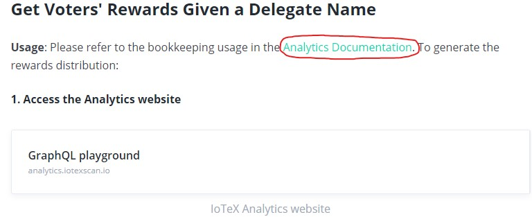
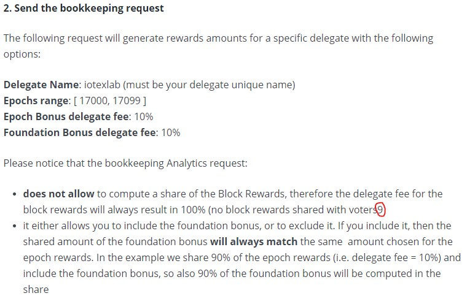

Chapter 8 More Resources
8.1 Exchange Integration - General Guide
Broken links highlighted below:

All other links seem good. Cool that there is documentation out there for the exchanges to understand how to integrate with the IoTeX blockchain.
8.2 Exchange Integration - Rosetta API
This one seems all good, no broken links.
8.3 Action Injector
Really cool that one can simulate random action traffic, impressive feature.
However, this command does not work. Tried on both Windows and Linux and it failed on both.
8.4 Hermes
Cool and makes sense here. Might be useful to link to a good resource that discusses Roll-Delegated Proof of Stake consensus.
8.5 Analytics Bookkeeping
This link is pointless because it links to itself so nothing happens:

This is a really tiny typo, but pointing it out anyway; missing a closing parenthesis here:
